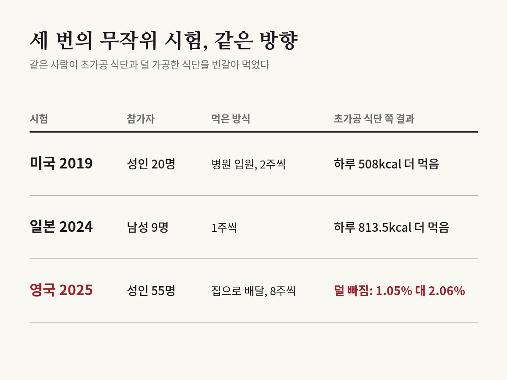

영양을 맞춰 차려도, 초가공식품 식단을 받은 20명은 하루 508kcal 더 먹었다
Kevin D. Hall et al. · Cell Metabolism, 2019

01열량을 똑같이 차려 줘도 더 먹을까
이 연구가 물은 건 하나예요. 당과 지방, 나트륨, 식이섬유까지 똑같이 맞춰 차려 줘도, 초가공식품으로 차린 식단을 받으면 사람이 더 많이 먹게 될까요?
당시 미국 국립보건원 연구원이던 케빈 홀의 팀은 몸무게가 안정된 성인 20명을 국립보건원 임상센터에 28일 동안 입원시켰어요. 남녀 10명씩이었고 평균 나이는 31세였어요. 참가자들은 무작위로 나뉘어 초가공식품 식단과 가공하지 않은 식단 가운데 하나를 2주 먹고, 곧바로 다른 식단으로 바꿔 2주를 더 먹었어요.
두 식단은 한 끼에 차려 주는 열량과 탄수화물·지방·단백질, 당, 나트륨, 식이섬유를 맞췄어요. 참가자는 먹고 싶은 만큼만 먹었고, 연구팀은 실제로 먹은 양을 쟀어요. 결과는 2019년 학술지 《셀 메타볼리즘》에 실렸고, 지금까지 1,600번 넘게 인용됐어요.
02초가공식품은 무엇을 가리키나
초가공식품이라는 말은 브라질 상파울루대학교 카를로스 몬테이루 교수 연구팀이 만든 '노바' 분류에서 나왔어요. 노바는 음식을 영양소가 아니라 가공한 정도와 목적에 따라 네 묶음으로 나눠요. 가공하지 않았거나 조금만 가공한 식품, 기름·설탕·소금 같은 요리 재료, 가공식품, 그리고 초가공식품이에요.
초가공식품은 원래 식품에서 뽑아낸 성분에 첨가물과 산업용 원료를 섞어 공장에서 만든 제품을 말해요. 아침용 시리얼, 사탕과 과자, 공장에서 대량으로 만든 빵이 대표적이에요. 영국에서는 하루 섭취 열량의 절반 이상이 이런 식품에서 나온다는 조사가 있어요.
032주 만에 벌어진 차이
초가공식품 식단을 받은 2주 동안 참가자들은 하루 평균 508kcal를 더 먹었어요. 늘어난 열량은 탄수화물 280kcal, 지방 230kcal였고, 단백질은 거의 차이가 없었어요.
몸무게도 반대로 움직였어요. 초가공식품 식단 2주 동안 평균 0.9kg 늘었고, 가공하지 않은 식단 2주 동안 0.9kg 줄었어요. 체지방은 초가공 식단 때 0.4kg 늘고, 가공하지 않은 식단 때 0.3kg 줄었어요. 순서를 무작위로 정해 같은 사람이 두 식단을 다 먹은 실험이라, 이 차이는 식단이 만든 것으로 볼 수 있어요.
참가자들이 매긴 맛과 익숙함 점수는 두 식단이 다르지 않았어요. 배고픔과 배부름 점수도 비슷했어요. 다른 건 먹는 속도였어요. 초가공식품 식단에서는 1분에 17kcal씩 더 빨리 먹었어요. 피 검사에서도 차이가 났어요. 먹고 나면 장에서 나와 배부르다고 느끼게 하는 호르몬은 가공하지 않은 식단 때 늘었어요. 위에서 나와 배고프다고 느끼게 하는 호르몬 그렐린은 가공하지 않은 식단 때 시작 때보다 줄었어요.
값은 초가공 식단이 쌌어요. 하루 2,000kcal씩 일주일을 차리는 재료비가 초가공 식단은 106달러, 가공하지 않은 식단은 151달러였어요.
04영국과 일본에서 다시 해 보니
20명이 병원에서 2주씩 먹은 결과가 다른 나라, 다른 생활에서도 나올지는 따로 확인해야 했어요.
일본 도쿄대학교병원 연구팀은 2024년 과체중이나 비만인 일본 남성 9명에게 두 식단을 1주씩 번갈아 먹게 했어요. 초가공식품 식단 때 하루 813.5kcal를 더 먹었고, 몸무게는 1.1kg 더 늘었어요. 같은 열량을 먹을 때 씹는 횟수도 적었어요.
2025년에는 영국 유니버시티칼리지런던(이하 UCL) 연구팀이 더 크고 긴 시험을 했어요. 홀 연구원도 공저자로 참여했어요. 체질량지수 25 이상 40 미만이고, 평소 열량의 절반 이상을 초가공식품으로 먹던 성인 55명이 참가했어요. 두 식단 모두 영국 정부의 건강 식단 지침에 맞췄고, 초가공 쪽은 영양 성분을 개선한 시리얼과 즉석식품, 식물성 대체식품처럼 '건강하다'고 팔리는 제품이 들어갔어요. 음식은 8주씩 집으로 배달했고, 두 식단 사이에 4주를 쉬었어요. 저자들은 나라의 식단 지침을 지킨 채 초가공식품의 영향을 본 시험은 이번이 처음이라고 밝혔어요.
8주 뒤 몸무게는 두 식단 모두 줄었어요. 덜 가공한 식단은 2.06%, 초가공 식단은 1.05% 줄어 차이는 1.01%포인트, 무게로는 0.96kg이었어요. 체지방은 덜 가공한 식단 때 0.98kg 더 빠졌어요. 먹고 싶은 음식을 참기 어려운 정도를 묻는 갈망 점수도 덜 가공한 식단 때만 줄었어요.
반대쪽을 가리킨 숫자도 있었어요. 중성지방은 덜 가공한 식단 때 더 내려갔지만, 나쁜 콜레스테롤로 불리는 LDL 콜레스테롤은 초가공 식단 때 더 많이 내려갔어요.

05왜 더 먹는지는 아직 갈린다
홀 연구와 일본 시험에서는 초가공식품 식단 때 더 먹었어요. 집에서 생활한 UCL 시험은 먹은 양을 직접 재지 못했고, 식사 일기를 낸 참가자들의 기록으로는 덜 가공한 식단 때 하루 327kcal 덜 먹었어요. 왜 이런 차이가 나는지는 아직 하나로 모이지 않았어요.
가장 많이 거론되는 설명은 에너지 밀도, 곧 같은 무게에 든 열량이에요. 홀 연구는 차려 준 식단 전체의 에너지 밀도를 맞췄지만, 음료를 빼고 음식만 보면 초가공 쪽이 약 85% 높았어요. 음료는 배부름에 영향을 덜 주기 때문에, 연구팀은 이 차이가 과식에 한몫했을 것으로 봤어요. UCL 시험에서도 초가공 식단의 에너지 밀도가 더 높았어요. 빨리 먹고 덜 씹는 것도 원인 후보로 꼽혀요.
초가공이라는 묶음 자체를 의심하는 목소리도 있어요. 덴마크 노보 노디스크 재단의 아르네 아스트루프 박사는 2022년 《미국 임상영양학회지》 지면 토론에서 이 개념이 식단 지침에 필요 없다고 주장했어요. 노바 분류는 가공과 첨가물의 기준이 모호해 잘못 분류하기 쉽고, 영양이 좋은 식물성 대체식품까지 초가공으로 묶는다는 거예요. 홀 연구의 과식도 에너지 밀도와 식이섬유, 혈당 부하, 첨가당 같은 기존 영양 기준으로 다 설명되고, 그마저 2주 사이에 빠르게 줄었다고 지적했어요.
홀 연구 자료에서도 초가공 식단 때 먹는 양은 하루에 25.5kcal씩 줄어들었어요. 연구팀은 다른 원인 후보도 들었어요. 초가공 식단은 열량 가운데 단백질 비율이 14%로, 가공하지 않은 식단의 15.6%보다 조금 낮았어요. 사람이 단백질을 일정하게 채우려고 다른 음식을 더 먹었다면 늘어난 열량의 일부를 설명할 수 있다는 거예요.
같은 토론에서 몬테이루 교수는 근거가 이미 충분하다며, 초가공식품을 줄이라는 권고를 식단 지침에 넣어야 한다고 맞섰어요.
06읽을 때 주의할 점
홀 연구는 20명이 2주씩 먹은 결과예요. 저자들도 병원에 입원한 환경이라 일상생활에 그대로 옮기기 어렵다고 적었어요. 일본 시험은 남성 9명이 1주씩 먹은 결과예요.
UCL 시험의 몸무게 차이는 8주에 1%포인트 남짓으로 작아요. 참가자 55명 가운데 50명이 분석에 들어갔고, 10명 중 9명이 여성이었어요. 참가자는 모두 유니버시티칼리지런던병원 직원이었고 절반 가까이가 간호사였어요. 두 식단을 끝까지 다 먹은 사람은 43명이었어요. 어느 식단을 먼저 먹었는지에 따라 결과가 달라지는 순서 효과도 나타났어요. 저자들은 8주 추세가 1년 내내 이어지면 덜 가공한 식단은 9~13%, 초가공 식단은 4~5% 줄 것이라고 계산했지만, 실제로 1년을 지켜본 결과는 아니에요.
세 시험 모두 식단을 통째로 바꿨어요. 첨가물과 에너지 밀도, 먹는 속도 가운데 무엇이 과식을 부르는지는 이 설계로 가려낼 수 없어요. 초가공식품을 많이 먹는 사람이 더 아프다는 관찰 연구는 많지만, 그것만으로는 식품 탓인지 그런 식사를 하는 사람들의 다른 생활 습관 탓인지 가리기 어려워요.
UCL 시험 비용은 영국 국립보건연구원과 의료 연구 자선단체 로즈트리스 트러스트가 댔고, 자금을 댄 곳은 설계와 분석에 관여하지 않았어요. 저자들의 이해관계도 논문에 적혀 있어요. 제1저자는 초가공식품을 언급한 자가 출판 책의 인세를, 공저자 크리스 반 툴레켄은 초가공식품을 다룬 책의 인세와 방송 출연료를 받아요. 마지막 저자 레이철 배터럼은 2023년 5월부터 비만 치료제를 만드는 일라이 릴리의 직원이자 주주예요.
원 논문
- Hall et al. (2019), Cell Metabolism 30(1), 67–77, doi:10.1016/j.cmet.2019.05.008
- doi.org/10.1016/j.cmet.2019.05.008